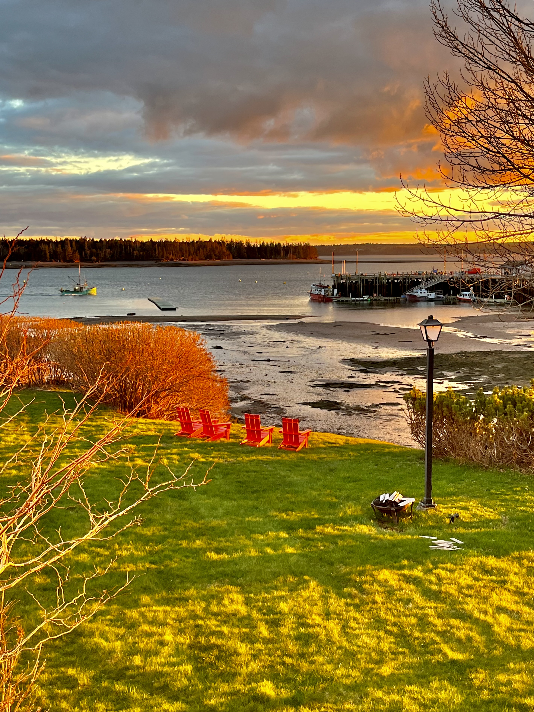
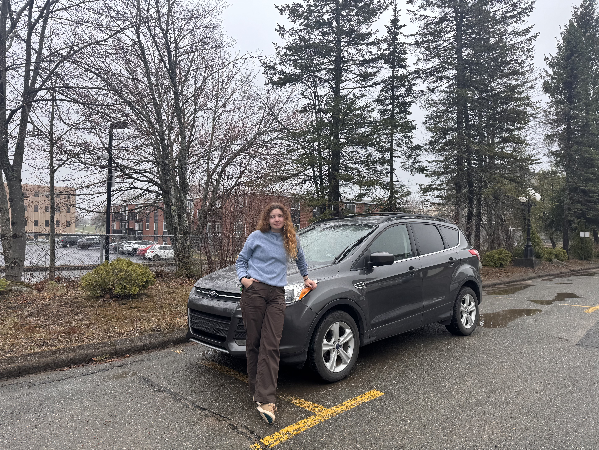

Landed in Saint Andrews

Oh what a welcome : )


Oh what a welcome : )

I've never thought of myself as brave, I've actually self-described as a chicken, but in the last few weeks I kept hearing this word used to label me. One time on hearing it I actually snorted, which may have been rude. It feels so foreign because I'm actually really really scared and I feel quite unprepared, I just keep doing it anyway because I feel this kind of pull? I thought there has to be a word for that, and it might be 'nutty'. So this morning I was thinking on how to describe how I feel I am, I searched: 'someone who is really scared but does stuff anyways', and google roasted me. Turns out that's what brave means. It's not a word for people who are stone-faced while they do hard things - that's fearless. Brave might even include those who ugly cry while they drive away from their home with everything packed in their car. Oops.
Well I handed in my badge and laptop, ended up staying past 5:30 chatting with people, it felt funny to realize just how many people there are that I will truly miss. So many artists, storytellers, good listeners, sources of wisdom, so many people cheering for me it feels unbelievable. It's now past 10 pm, Anton texted to tell me my slack was deactivated. I know I won't truly lose contact with anyone, but this chapter of life has officially closed and I mourn for it, for the suddenness of it. But then again I feel so free, like I could do anything next, so much possibility lies ahead and that's something that would have terrified me before. The me who lived according to shoulds and optimizations, who thought only in the long term. Today all my anxiety has melted away, I'm sure it will arrive again, as that is the nature of an anxious illness, but for now it is far away - all I feel is calm and even, headed towards exactly where I'm supposed to be.